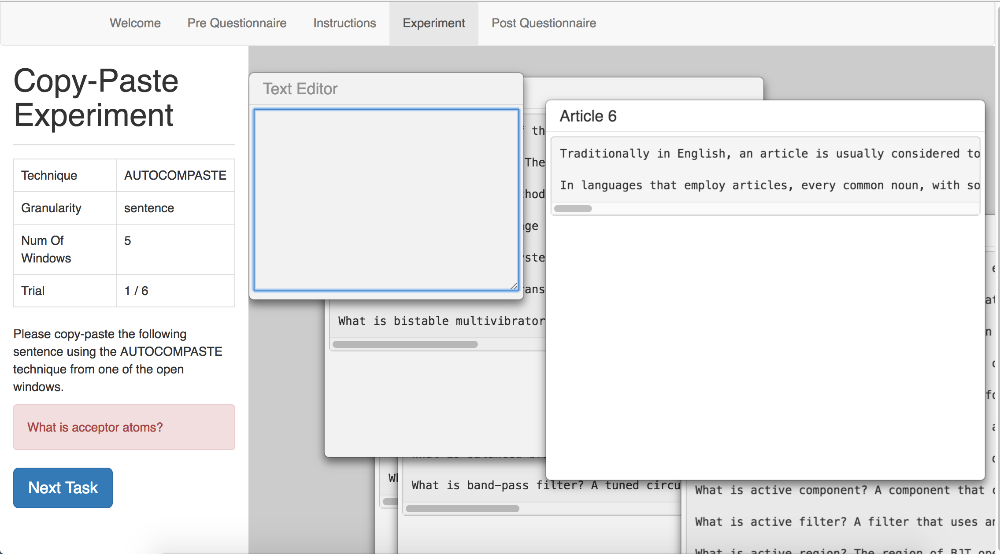
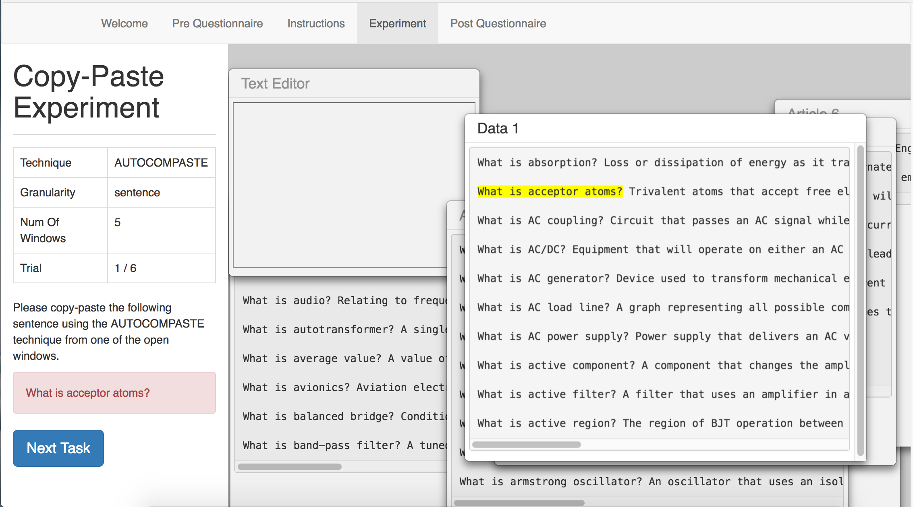
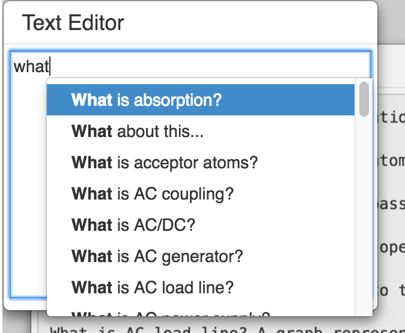

Dear participant , please read the instructions before the experiment.
This experiment would require you to complete a few tasks using two techniques – AutoComPaste and the Ctrl-C, Ctrl-V. The interface of the experiment and details of the task would be further elaborated below. At the end of this experiment, you would be required to fill in a questionnaire. Please do not communicate with other participants during this experiment and turn off your cell phones to prevent disturbance. If you have any questions or encounter with any problems, please do ask for help.
For the tasks in this experiment, you are required to copy and paste certain text using the two different techniques. The text that you are required to copy could be a phrase, sentence or paragraph and will be indicated in the instructions section for the specific task.
As shown in the diagram below, the interface for this experiment consist of two sections.
In the left section, you will find the instructions for the specific task, including the type of technique to use as well as the text that you should copy.
In the right section, it consists of a 'Text Editor' window and 'Articles' window. You are required to copy the required text from the 'Articles' window and paste it into the 'Text Editor' window. For this experiment, the text that you are required to copy would be highlighted in yellow for easy identification. Do note that you are not allowed to type the text in the ‘Text Editor’ Window.
For the AutoComPaste technique, after typing three characters, there will be a list of possible sentences for you to select using the 'up' and 'down' arrow keys. Hit the 'enter' key to select the sentence.
After you have completed the task, click the 'Next Task' button to proceed. You may start this experiment by clicking the 'Next' Button below.